<title>CS140 Midterm Exam - March 12, 2013 Answers and Grading</title>

<h2>CS140 Midterm Exam - March 12, 2013 Answers and Grading</h2>
<hr><h2>Question 1: 12 Points</h2>

<UL>
<LI> <b>Scenario #1</b>: "Chloe Arpa" has a hash index of 88.  With separate chaining, 
it doesn't matter if the entry is full or empty -- you simply append it to the end of the
entry's list, so the answer is 88.  With linear probing, you find the lowest empty cell 
greater than or equal to the hash index, wrapping around if you reach the end.  Therefore
the answer is 89.  With quadratic probing you test <i>(index + i<sup>2</sup>)%100</i> for successively higher <i>i</i>  With <i>i=1</i>, you get 89, so the answer is 89.
<LI> <b>Scenario #2</b>: The hash index is 99, so separate chaining puts the value in index 99
and linear probing puts the value in index 2.  With quadratic probing, entries 99, 0, and 3
are all full, but entry 8 -- (99 + 3*3)%100 -- is empty.
<LI> <b>Scenario #3</b>: The hash index is 50, so separate chaining puts the value in index 50
and linear probing puts the value in index 63.  With quadratic probing, you'll note that there
is no value <i>i</i> such that <i>i<sup>2</sup></i> has a last digit of 3.  Therefore, there's
no way that quadratic hashing will give you any of those values that end with 3.  So the answer
is that quadratic probing will not find a place to put the value.
</UL>

<h3>Answers Summarized</h3>

<center><table border=3>
<tr>
<td></td>
<td align=center><b>Separate Chaining</b></td>
<td align=center><b>Linear Probing</b></td>
<td align=center><b>Quadratic Probing</b></td></tr>
<tr>
<td><b>Scenario #1</td>
<td align=center>88</td>
<td align=center>89</td>
<td align=center>89</td></tr>
<tr>
<td><b>Scenario #2</td>
<td align=center>99</td>
<td align=center>2</td>
<td align=center>8</td></tr>
<tr>
<td><b>Scenario #3</td>
<td align=center>50</td>
<td align=center>63</td>
<td align=center>None</td></tr>
</table></center><p>

<h3>Grading</h3>

1 point for the separate chaining answers, 
1.5 for the others.
Leaving Scenario 3 blank did not constitute a correct answer -- you needed to 
state that an empty entry cannot be found.

<p><center><table border=3><td>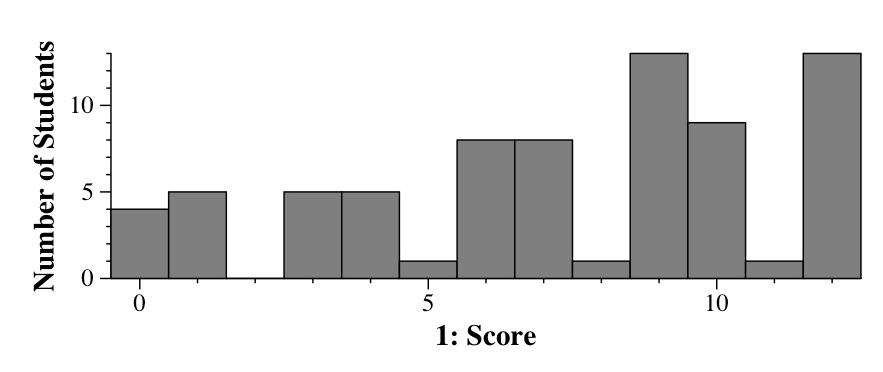</td></table></center><p>


<hr><h2>Question 2: 10 Points</h2>

I'm going to be honest -- I was very disappointed with the majority 
of the answers.  The scores here were worse than question 6.
Obviously, when so many students do poorly on a question,
it's an indication that I am not teaching the material correctly, or 
emphasizing the points that I am testing enough.  I will work on that.
<p>
There are a few points here, though, that I want to stress, and if you are
studying from this exam, please take this to heart:
<UL>
<LI> When I give you prototypes for procedures, pay attention to them.
A large number of students wrote things like the following:
<pre>
- a.insert(0);
- a.insert(i, j), where i is an integer and j is a double.
- a.erase(i), where i is an integer
- a.erase()
</pre>
When you write this, you are showing me that you didn't look at the 
prototype, because <b>insert()</b> and <b>erase()</b> take iterators.
<p>
<LI> In class, I went over when you use each of these three data structures,
and in the lecture notes, there is a section called "When do I use each 
data structure."  Many of you quoted this, which got you points.  However,
mapping that to the code was not done very well.  In particular, I saw
a lot of code where you were erasing from the middle (or the back) 
of the vector, and
then you were saying that you erased from the front.  My advice here --
at the very least, read the lecture notes so that you know the points
I am making.  And then when you write code, try to make sure that the
code illustrates the points.
<p>
<LI> Read the whole question.  A large number of students did not
do the second half of the question, which is a shame because it was
essentially regurgitation of the lecture notes.
</UL>
<h3>Answers</h3>

<b>Part A</b>: You want a procedure that either inserts into the front of the vector
or deletes from the front of the vector.  The reason is that with a deque, those are
constant time operations, and with a vector, those are linear operations.  We
cover this in the lecture entitled "<a href="../../../Notes/Lists/index.html">Lists, Iterators, Bad Vector Usage, Deques</a>."  Here's an example
(in <b><a href="q2.cpp">q2.cpp</a></b>):

<p><center><table border=3 cellpadding=3><td><pre>
void X(vector &lt;double&gt; &a)
{
  int i;

  while (!a.empty()) a.erase(a.begin());
}
</pre></td></table></center><p>

If <b>a</b> has <i>n</i> elements, then this procedure performs <i>n(n+1)/2</i> operations
with a vector, and only <i>n</i> with a deque.
<p>
Many of you tried to insert into arbitrary places in the vector.
Unfortunately, that will work just as poorly with a deque.  It's only in the beginning when the deque matters.
<p>

<b>Part B</b>: Lists are useful because you may insert in front of any element,
and it is guaranteed to run in constant time.  Similarly, you may delete any element
and it is guaranteed to run in constant time.  So, a list is advantageous over a
deque when you are inserting to or deleting from the middle of the list, rather than 
the first or the last element.  An example is the "DiamondHunt" example from the
"<a href="../../../Notes/Lists/index.html">Lists, Iterators, Bad Vector Usage, Deques</a>" lecture.  

<h3>Grading</h3>

<UL>
<LI> Part A: You wrote an effective procedure: 4 points.  
<LI> Part A: Your explanation: 2 points
<LI> Part B: Your situation: 2 points
<LI> Part B: Your explanation why: 2 points
</UL>

<p><center><table border=3><td>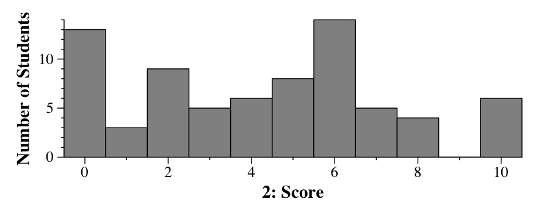</td></table></center><p>

<hr><h2>Question 3: 12 Points</h2>

<UL>
<LI> 47 = 32 + 8 + 4 + 2 + 1, which is 101111 in binary: 0x2f
<LI> With binary, each set of four bits is a hex digit: 10 1010 1001: 0x2a9
<LI> Again, convert this to binary: 6*256 is 110 0000 0000.  10 is 1010.  So that
makes 110 0000 1010, which is 0x60a.
<LI> In binary, 0xcb is 1100 1011.  When you left shift that by one, it becomes 1 1001 0110: 0x196.
</UL>

<h3>Grading</h3>

Three points per answer.   
On part A, you received 1 point for 0x2e and 0x30.
On Part C, you received 1 point for 
608, 609, 60b, 60c, 60d, 60e, 60f, 50a, 40a, 70a, 80a, c0a and 600.
I gave half credit if you bit-shifted the wrong way and answered 0x65 in part D.  I also gave half credit for 96 (left shift on a byte), and 
97 (circular left shift on a byte).

<p><center><table border=3><td></td></table></center><p>

<hr><h2>Question 4: 12 Points</h2>

This program is in <b><a href="sid.cpp">sid.cpp</a></b>.  Please feel free to compile it
and do a cut-and-paste on the input.  Key points are that every word is read, regardless
of whether there are multiple words on a line, and that the "10" and "Mario" are 
ignored because they are on the command line:

<p><center><table border=3><td>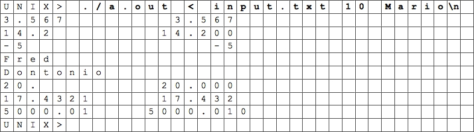</td></table></center><p>

<h3>Grading</h3>

I asked yes/no questions here and assigned points for the answers:

<UL>
<LI> <b>2 Points:</b> Did your output look roughly right?
<LI> <b>2 Points:</b> Did you include 14.2 and Fred?
<LI> <b>2 Points:</b> Did you not include Mario and 10?
<LI> <b>2 Points:</b> Were all of your decimals lined up, (ignoring 5000.01)
<LI> <b>1 Point:</b> Was the integer right justified with the decimals?
<LI> <b>1 Point:</b> Did the numbers start under the 'u' in 'a.out'?
<LI> <b>1 Point:</b> Did you get 5000.010 correct?
</UL>

<p><center><table border=3><td></td></table></center><p>


<hr><h2>Question 5: 10 Points</h2>

This is a nuts and bolts topcoder question (SRM 337, D2, 250-pointer).  You need
to compare indices <b>i</b> and <b>s.size()-i-1</b>, and set both to the smaller
character.  Here it is with a <b>main()</b> for testing:

<b><a href="s_to_p.cpp">s_to_p.cpp</a></b>

<p><center><table border=3 cellpadding=3><td><pre>
#include &lt;iostream&gt;
using namespace std;

string s_to_p(string s)
{
  int i, j;

  i = 0;
  j = s.size()-1;
  while (i &lt; j) {
    if (s[i] &lt; s[j]) {
      s[j] = s[i];
    } else {
      s[i] = s[j];
    }
    i++;
    j--;
  }
  return s;
}

main()
{
  string s;

  while (cin &gt;&gt; s) cout &lt;&lt; s_to_p(s) &lt;&lt; endl;
}
</pre></td></table></center><p>

<h3>Grading</h3>

10 points.  Grading these is objective -- I look over your program
and assign points on how well I think you understood the problem and
coded your answer.

<p><center><table border=3><td>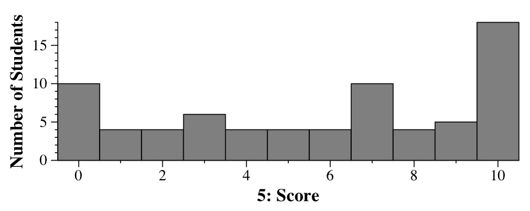</td></table></center><p>

<hr><h2>Question 6: 12 Points</h2>

The strategy here was to look at the difference between the header files:
<UL>
<LI> In header 1, the vector holds lists, while in the others, it holds
pointers to lists.
<LI> In header 2, the list holds doubles, while in the others, it holds
pointers to doubles.
</UL>

Once you see the difference, you look over a program or two, and
see that there are only a few places where they differ.  The strategy
is to think about each of those differences and how they may relate
to compiler errors and printing out wrong values.  That lets you assign
4's, 5's and 3's to various header/implementation combinations:

<UL>
<LI> Is <b>lp</b> the right type?  In Implementations  A and E, it is the wrong type for Header 1.
In Implementation F, it is the wrong type for Headers 2 and 3.  So the answer is "5" for 
all of those.
<p><center><table border=3><td>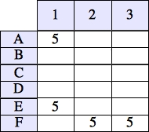</td></table></center><p>
<LI> Is <b>lit</b> using <b>.begin()</b> or <b>->begin()</b>?  With Header 1, it should
be using dot and with Headers 2 and 3, it should be using arrows.  That allows us to
fill in a bunch of 4's.  A special case is Implementation E, where <b>lp</b> is a pointer,
and the <b>for</b> loop uses dots.  That's a compilation error in the <b>for</b> loop 
regardless of the header:
<p><center><table border=3><td>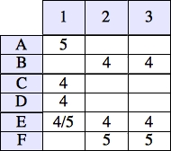</td></table></center><p>
<LI> Are we using <b>*lit</b> or<b>*(*lit)</b> to access the elements.  In Headers 1 and 3, it
should be <b>*(*lit)</b>; otherwise it will print out pointers and not doubles (answer 3). 
In Header 2,
it should be <b>*lit</b>; otherwise, it will be a compilation error (5).  Now we can fill
in more: 
<p><center><table border=3><td>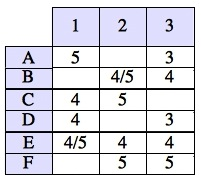</td></table></center><p>
<LI> That leaves five blank cells.  If you scan them, they all look pretty good.  The only
problem is Implementation F.  Because <b>lp</b> is not a pointer, the statement
<b>lp = v[i]</b> makes extra copies of the lists:
<p><center><table border=3><td>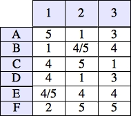</td></table></center><p>
</UL>

If you want corroboration, 
<b><a href="q6-script.sh">q6-script.sh</a></b> is a shell script that compiles 
the header/implementation combos and tests:

<pre>
UNIX> <font color=darkred><b>sh q6-script.sh 1 A</b></font>
Header 1.  Implementation A

Compilation failed:

q6-test.cpp: In function 'void print_LVec(LVec&)':
q6-test.cpp:14: error: cannot convert 'std::list<double*, std::allocator<double*> >' to 'L*' in assignment
UNIX> <font color=darkred><b>sh q6-script.sh 1 B</b></font>
Header 1.  Implementation B

Compilation succeeded -- running

10
10.01
10.02
10.03
10.04
10.05
10.06
10.07
10.08
10.09
10.1
10.11
10.12
10.13
10.14
UNIX> <font color=darkred><b></b></font>
</pre>

All of the combinations are in 
<b><a href="q6-outputs.txt">q6-outputs.txt</a></b>.

<h3>Grading</h3>

0.67 or 0.66 points per answer.    Partial credit -- you got 0.25 points for answers that
are in the parentheses below:
<p><center><table border=3><td>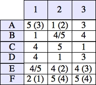</td></table></center><p>

<p><center><table border=3><td>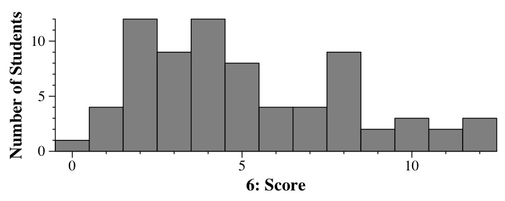</td></table></center><p>

Out of curiosity, I wrote a program to simulate 10 million students
answering randomly:

<p><center><table border=3><td>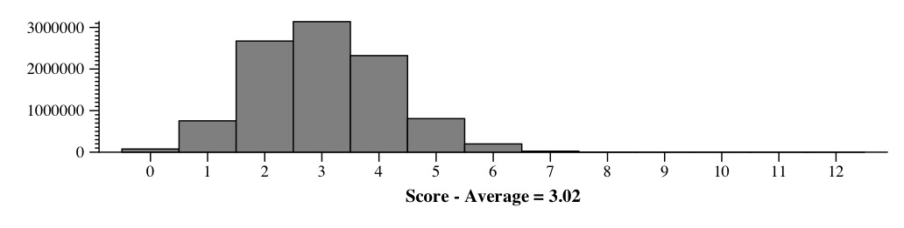</td></table></center><p>

Clearly, y'all did much better than that -- yay!!  Your average was 5.57,
while that average was 3.02.
